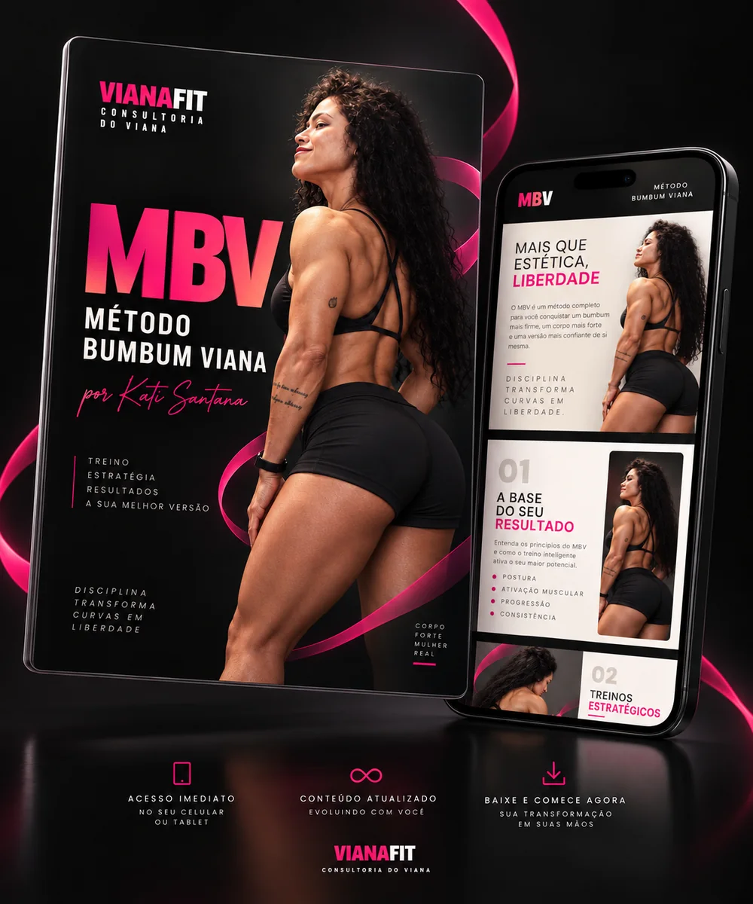

01
Diagnóstico
Por que um treino estagna mesmo quando existe esforço e frequência.
03 · Produto e oferta
O MBV é uma metodologia que organiza conhecimento técnico de forma aplicada e deixa claro qual o resultado esperado:entender o que está sendo feito, executar melhor os exercícios e conseguir provar que o treino evoluiu.

Por que um treino estagna mesmo quando existe esforço e frequência.
O que a Kati observa em estímulo, execução, seleção de exercícios e organização.
Os padrões que geram sensação de novidade sem criar progresso mensurável.
Princípio técnico virando decisão prática para o próximo treino.
Carga, repetições, execução e consistência acompanhadas por 8 semanas.
Checklist, tracker e vídeos de execução, onde a demonstração aumenta aderência.
04 · Go-to-market
Cinco fases com data, e um ponto de decisão fechando cada uma. Nenhuma fase avança sem bater o número da anterior. A janela respeita a turma da Consultoria, que abre em 07/10: o MBV fica em silêncio até 20/10 para não competir com a matrícula.
150 comentários e 400 respostas de enquete nos posts de diagnóstico. Abaixo de 60 comentários, a promessa muda antes de gastar com produção.
Nenhuma fase avança sem bater este número.
600 diagnósticos iniciados, 55% de conclusão e 250 na lista de espera. Abaixo disso, o lançamento desloca para 17/11.
Nenhuma fase avança sem bater este número.
lote esgota em 72h, LP para checkout acima de 8% e ativação acima de 55%. Se a ativação vier baixa, não abre: o problema é entrega, e volume só compra reembolso.
Nenhuma fase avança sem bater este número.
margem acumulada cobre a produção, reembolso abaixo de 5% e receita por lead acima de R$12. Só aí entra mídia paga.
Nenhuma fase avança sem bater este número.
a v1.1 do produto e o próximo Método só existem se o MBV passar de 280 compras, que é o ponto de equilíbrio da produção.
Nenhuma fase avança sem bater este número.
05 · A audiência que já existe
O maior ativo de aquisição da casa não é a conta da marca, é o perfil do Marcos. E a especialista que assina o produto tem 108 seguidores. Transferir confiança de um para o outro é o problema mais difícil deste lançamento, e ele precisa ter plano, data e meta.
canal_entrada=mvianara.A Kati é atleta IFBB. É a prova de autoridade mais dura que existe no fitness brasileiro, é verificável, e é o que separa o MBV de um PDF de R$89 na prateleira do Hotmart. Entra na bio, na capa, acima do preço na landing page e no primeiro terço de todo Reel de método.
Com 305 mil seguidores próprios e nenhum baseline, o CPL orgânico é zero e não dá para saber quanto vale pagar por lead antes de medir. O Pixel entra na semana 1 para que o segundo ciclo já tenha público de retargeting. A exceção que eu abriria: R$500 de retargeting na semana do carrinho, sobre quem visitou a LP e não comprou, com ROAS esperado acima de 5x.
Dia 12/11, 40 vendas em vez de 120. Não mexo no preço: pelo funil o gargalo estará entre a página e o checkout. Subo o bloco "para quem não é" acima do preço, disparo o e-mail de objeção antes da hora e peço a segunda aparição do Marcos. Preço é a última alavanca, porque é a única que não volta atrás.
06 · Instagram
A linha editorial leva a leitora de "não percebi o problema" até "entendi o método e quero saber se serve para mim". Cada peça tem função, CTA único e etapa de jornada declarados, e o pilar Produto nunca aparece em dois dias seguidos.
 Diagnóstico
Diagnóstico Autoridade
AutoridadeNada de CTA duplo. Toda peça de diagnóstico termina em pergunta ou enquete. Comentário respondido em até 1 hora nas duas primeiras horas. E o sticker de link nos Stories existe porque a DM automatizada para quem não segue cai em Solicitações, que é onde o alcance do Marcos se perderia.
07 · Como a Kati grava e publica
Marketing transforma conhecimento técnico em narrativa sem transformar a especialista em atriz. A regra de voz que sustenta isso: na câmera a Kati fala em primeira pessoa, porque está ensinando; na legenda, no e-mail e na newsletter, é a Consultoria falando sobre ela.
Pergunta ou contraste que captura atenção sem clickbait.
Resposta direta e contexto suficiente para entender o problema.
O princípio técnico que sustenta a resposta e diferencia o método.
O que observar no próprio treino, e o comportamento esperado depois.
Tela: "Queimou = funcionou?"
"Se o seu glúteo queima no final da série, você acha que o treino foi bom. Nem sempre foi."
"Queimação é acúmulo de metabólito. Ela aparece com repetição alta e carga leve. Ela não diz que o músculo recebeu estímulo para crescer."
"O que faz glúteo crescer é tensão com carga subindo ao longo das semanas. Dá para terminar uma série pesada de hip thrust sem queimar nada e ter feito o melhor treino do mês."
Tela: "anota a carga"
"Em vez de perseguir a queimação, anota a carga e as repetições de hoje. Semana que vem tenta um pouco mais. Se subiu, funcionou. Se não subiu em 3 semanas, aí a gente troca."
Tela: "Comente MBV e descubra se o seu treino evolui ou só muda."
A Kati não fala o CTA. A tela e a legenda fazem isso.
O campo "o que não afirmar" existe porque o conteúdo é assinado por uma profissional técnica, e promessa de resultado mal calibrada é risco dela, não meu.